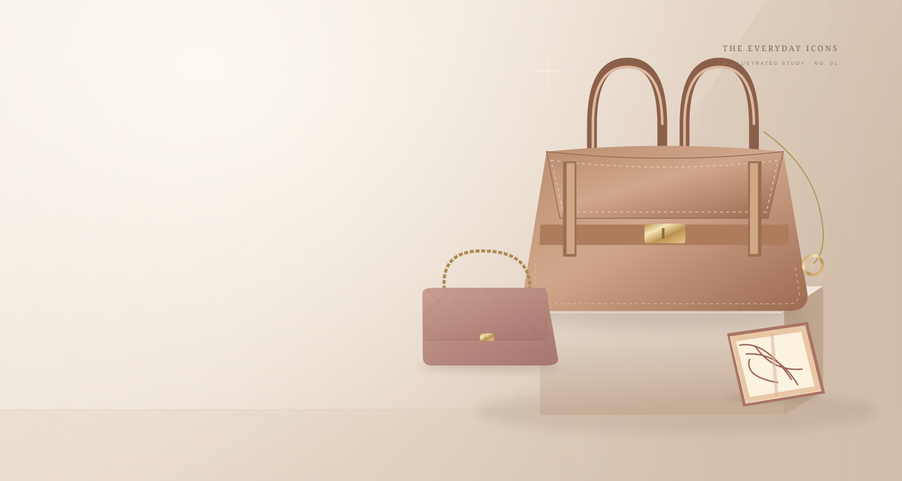

THE EDITOR’S LETTER
本周专题


THE HOUSES & THEIR STORIES
品牌图鉴
每一个名字背后，都有一间值得走近的工坊。
Hermès1837 · 法国Chanel1910 · 法国Louis Vuitton1854 · 法国Dior1946 · 法国Gucci1921 · 意大利Prada1913 · 意大利Bottega Veneta1966 · 意大利Celine1945 · 法国Cartier1847 · 法国Tiffany & Co.1837 · 美国Bvlgari1884 · 意大利Van Cleef & Arpels1906 · 法国Rolex1905 · 瑞士Omega1848 · 瑞士Fendi1925 · 意大利
向右探索更多品牌 ⟶
NOTES ON BEAUTIFUL THINGS
慢读日常


A SMALL DICTIONARY OF ICONS
编辑精选 · 经典词典
先记住一个细节，再打开一段故事。